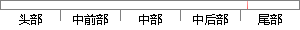

55以上，可见模型的分辨能力和预测能力都很优秀。
片段位置图

相似结果|
相似片段 1：我国优秀男子>>$6栏运动员专项能力指标体系和专项成绩的预测模型是非常必要的A>!研究对象与研究方法"+"!研究对象本文的研究对象为我国优秀男子>>$6栏运动员!一级及一级以上运动员"的专项能力A
|
※ 片段修改建议 ※
近似词参考：- 模型：模子
- 分辨：分辩 辨别
- 能力：本领
- 预测：展望 猜测
- 能力：本领
- 优秀：优异 良好 优良
系统自动生成语句：55以上，可见模子的分辩本领和展望本领都很优异。
注：本片段修改建议为系统自动生成，仅供参考。